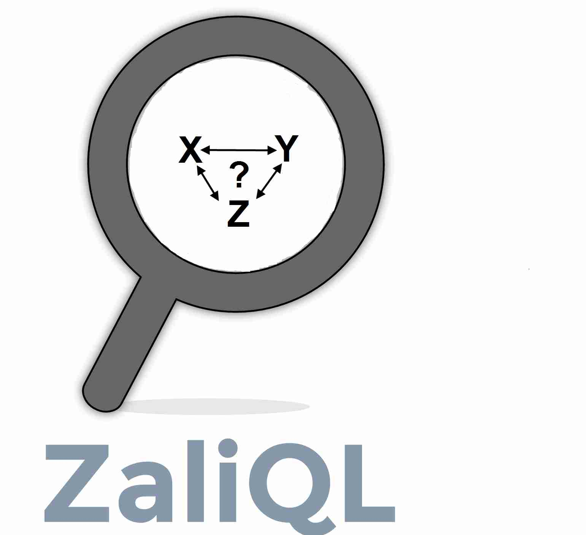
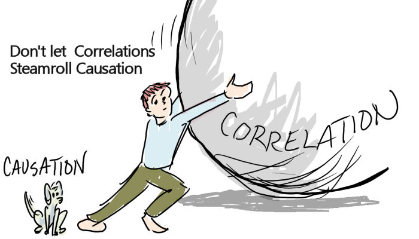

ZaliQL: A SQL-Based Framework for Drawing Causal Inference from Big Data (submitted)
Many tools perform causal inference using statistical software such as SAS, SPSS, or R project. However, these tools do not scale to large datasets. Furthermore, in many of the most interesting Big Data settings, the data is highly relational (e.g, social networks, biological networks, sensor networks and more) and likely to pour into SQL systems. There is a rich ecosystem of tools and organizational requirements that encourage this. Transferring data from DBMS to statistical softwares or connecting these softwares to DBMS can be error prone, difficult, time consuming and inefficient. For these cases, it would be helpful to push statistical methods for causal inference into the DBMS. ZaliQL (Zali refers to al-Ghzali, a medieval Persian philosopher. It is known that David Hume, a Scottish philosopher, who gave the first explicit definition of causation in terms of counterfactuals, was heavily influenced by al-Ghzali's conception of causality) is a SQL-based framework for drawing causal inference that circumvents the scalability issue with the existing tools. ZaliQL supports state-of-the-art methods for causal inference and runs at scale within a database engine.
Causal vs. predictive inference
Much of the success of Big data today comes from predictive or descriptive analytics: statistical models or data mining algorithms applied to data to predict new or future observations, e.g., we observe how users click on ads, then build a model and predict how future users will click. Predictive analysis/modeling is central to many scientific fields, such as bioinformatics and natural language processing, in other fields - such as social economics, psychology, education and environmental science - researchers are focused on testing and evaluating causal hypotheses. Both predictive and causal analysis are needed to generate and test theories, policy and decision making and to evaluate hypotheses, yet each plays a different role in doing so. In fact, performing predictive analysis to address questions that are causal in nature could lead to a flood of false discovery claims. While the distinction between
Causal Inference from Big Observational data
Causal inference has been studied extensively in statistics and computer science. Applying the existing tools and techniques to Big Data, however, is challenging. To begin with, the Big Data is typically observational data, meaning that it was collected opportunistically, unlike a randomized or controlled experiment, which is the gold standard for causal analysis in many settings (in particular clinical trials). In addition, it faces the usual challenges in data management for Big Data, which are often unfamiliar to statisticians: the data needs to be first acquired (e.g., from text, images, sensors, etc), integrated, cleaned, and transformed, before being subjected to any analysis. In the big data setting, issues of heterogeneity (multiple datasets, collected under different experimental settings, many times with different schemas, etc.) reign supreme. In addition, in many of the most interesting Big Data settings, the data is highly relational (e.g, social networks, biological networks, sensor networks and more) and the classic causal models often assume away any causal relational dependencies. The goal of this project to to develop a declarative framework for causal analysis on Big Data. In particular we leverage from the existing techniques in data management to address fundamental problems that arise in casual analysis on big relational data: definition, specification and verification of the key statistical assumptions needed for causal inference; matching and experiment design; analysis of network effects in causal models; discovery, integration and reconciliation of causal networks; and explanation of complex data analytic results.

People
|
Postdoc (University of Washington)
|
Faculty (University of Washington)
|
Updated on or after Sep 10, 2016

causal and predictive analysis has been recognized, the conflation between the two is common. In many cases, researchers who want to discover causality from data analysis settle for predictive analysis either because they think it is causal or lack of available alternatives.
Publications
Drawing Causal Inference from Big Data
Causality has been studied extensively in databases. Causality in databases aims to identify causes for an observed output of a data transformation. While these works share some aspects of the notion of causality as studied in our project, the problems that they address are fundamentally different.
Related Projects